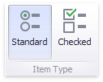
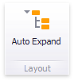

Filter Elements Overview
The Dashboard Designer allows you to create filter elements that used to filter other dashboard items.
To add the required filter element to the dashboard, use the Filter Elements button in the Home ribbon tab.

Combo Box
The Combo Box dashboard item allows you to select a value(s) from the drop-down list.
You can switch the combo box type in the ribbon Design tab.

| Combo Box Type | Example | Description |
|---|---|---|
| Standard |  |
Allows yous to select only a single value. |
| Checked |  |
Allows you to select multiple values in the invoked drop-down list. |
List Box
The List Box dashboard item allows you to select a value(s) from the list.
You can switch the list box type in the ribbon Design tab.

| List Box Type | Example | Description |
|---|---|---|
| Checked |  |
Allows you to select multiple values in the list box. |
| Radio |  |
Allows you to select only a single value in the radio group. |
Tree View
The Tree View dashboard item displays values in a hierarchical way and allows you to expand/collapse nodes.

You can manage the initial expanded state of filter values using the Auto Expand button in the Design ribbon tab.

Date Filter
The Date Filter dashboard item allows you to filter dashboard data based on the selected data range. The range can be relative (Last 3 Months), use fixed dates (01-01-2018), or presets (Month-to-date). You can also filter dates before or after a specified date.
The DateFilter item displays a set of intervals that can be used as quick filters.

See Date Filter for details.